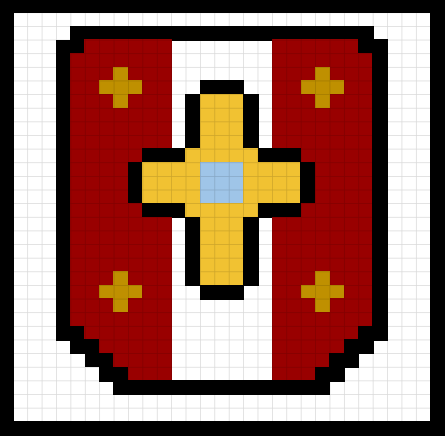

I created my Favicon in a 32x32 pixel canvas. I included a black outline to define the Favicon to make it stand out. I colored it with dark red, yellow, golden yellow, and light blue. My Favicon is inspired by the medieval shields used by the Arabs.
To create my webpage, I started off with the "!DOCTYPE html" followed by the "html" and "head" tags. In the metadata, I learned a new tag called the "link" tag, which allowed me to input my Favicon into the Website. I created my headings with the required inform with the "h1-h6" tags.